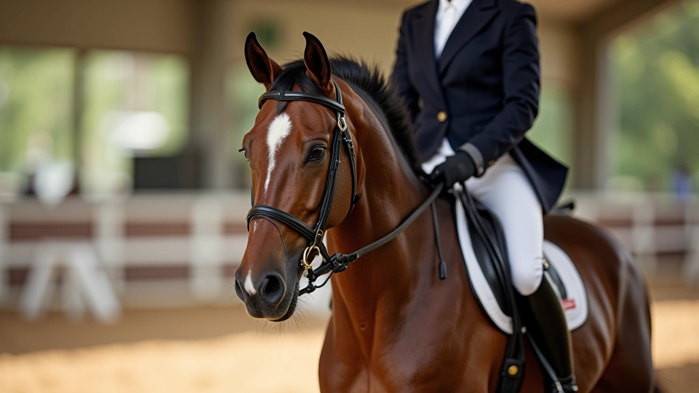

قصتنا وخبرتنا
إسطبل النيل للفروسية ش.م.م بدأت رحلتها لأن مؤسسونا رأوا فجوة حقيقية في التدريب المتخصص. كثير من الفرسان لم يكونوا يحصلون على توجيه واضح حول انتقالات المشي والتوقف . هذه الانتقالات ليست سهلة — تحتاج فهماً عميقاً للحركة والتوازن والاتصال بين الفارس والحصان.
نحن لا نقدم حلولاً سريعة أو وعوداً غير واقعية. بدلاً من ذلك، نركز على بناء أساس قوي. الفرسان الذين يعملون معنا يتعلمون التقنية الصحيحة من البداية. هذا يعني وقت أقل للتصحيح لاحقاً، ومزيد من الثقة عند التنافس أو التدريب اليومي.
خلال السنوات الماضية، طورنا طرقاً فعّالة في التدريب. كل جلسة تُبنى على السابقة. لا نتسرع. نراقب التقدم ونعدل النهج حسب احتياجات كل فارس وحصان.
